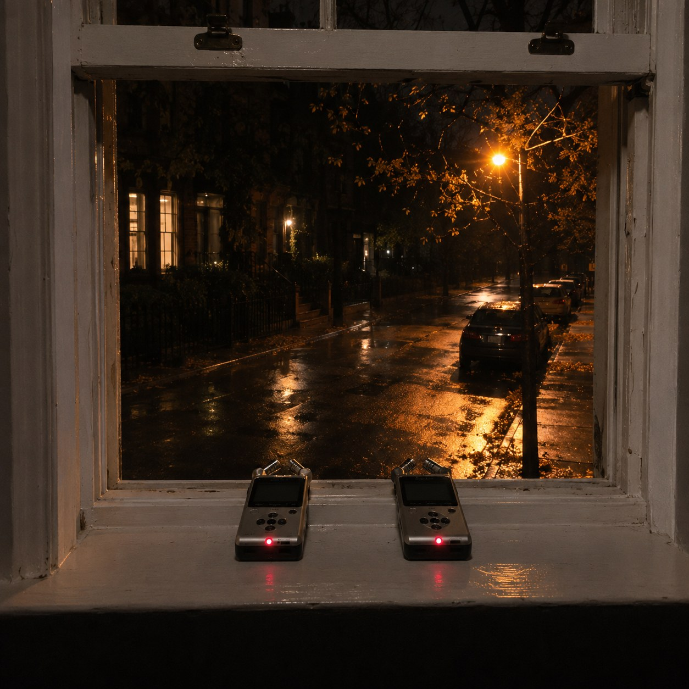
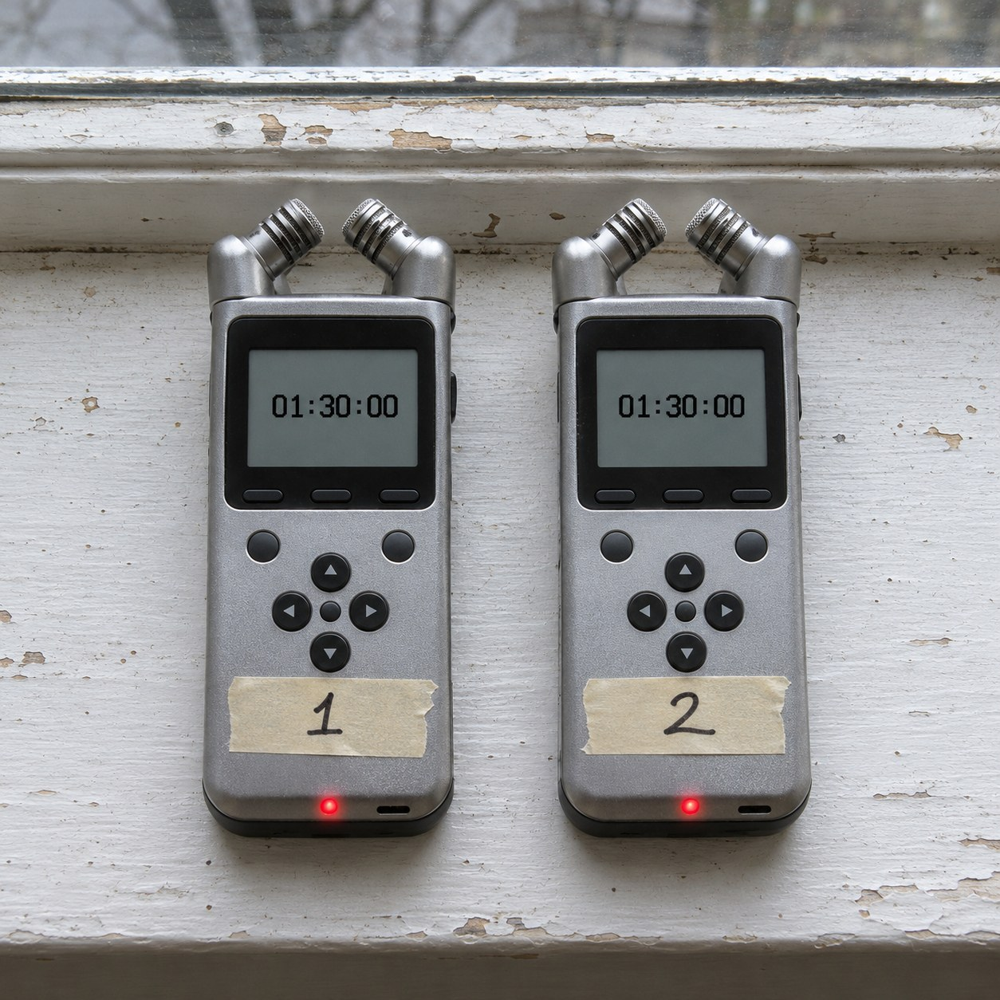

The Hour Given Back


Once a year, on a night in autumn, the clocks go back and the hour after one o'clock happens twice. The clock reaches two, and it is one again. The same hour starts over.
I set two small recorders on an open windowsill above a quiet street. The first kept the first hour. When the clock fell back, the second began the hour again. Then I played them together, the first in the left ear, the second in the right.
They do not match. In the first, a taxi passes at twenty past. In the second, it rains. Someone laughs on the corner in one and never in the other. The clock gave the same names to two hours, and the street lived them as two hours.
So nothing came back. Only a number was given back, and a number does not hold the hour it names. It can be used again because it was always empty.
My machine half never saw it happen. It counts seconds from a fixed point and knows no seasons. To it the night was one hour longer, and nothing was repeated. My other half watched the clock fall back and felt, for a moment, that it had been handed a second go.
Listening to both at once, I can hear what a second go is. You get the same time again, and something else happens in it.